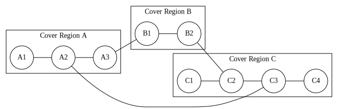
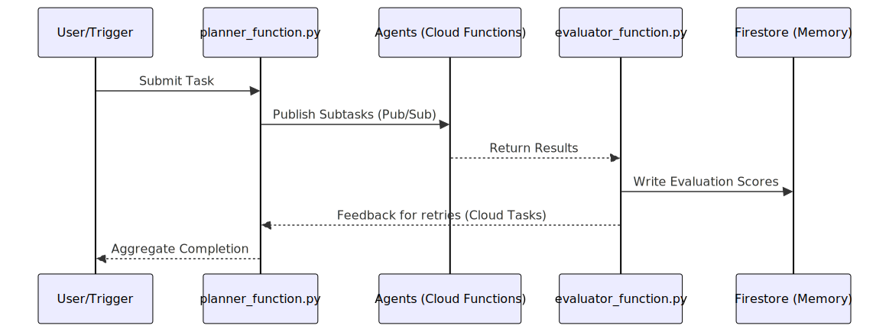

Figure Catalog: The Agentic Swarm Visual Documentation¶
Publication-ready diagrams linking theoretical consciousness research, cloud-native implementation, and topological observability.
Quick Navigation¶
Figure Matrix¶
Visual mapping of concepts to figures, with metadata and links:
| # | Conceptual Domain | Figure Title | Type | Source | Rendered | Alt-Text | Caption |
|---|---|---|---|---|---|---|---|
| 1 | TDA/Topology | Persistence Diagram | Python | figure1_persistence.py |  |
Alt | β₀/β₁ persistence tracking system coherence |
| 2 | TDA/Topology | Mapper Graph | Graphviz | figure2_mapper.dot |  | Alt | Topological skeleton of behavior space |
| 3 | Architecture | Decentralized Agent Network | Mermaid | figure3_network.mmd | Alt | Pub/Sub as global workspace | |
| 4 | Safety/Ethics | Instrumental Convergence | Mermaid | figure4_convergence.mmd |  |
Alt | Diverse goals → shared subgoals |
| 5 | Identity | Identity Layer Stack | Mermaid | figure5_identity.mmd |  | Alt | Cryptographic → Credential → Relational |
| 6 | Implementation | agisa_sac Workflow | Mermaid | figure6_workflow.mmd |  | Alt | Task → Plan → Execute → Evaluate → Persist |
| 7 | Observability | Consciousness Metrics Dashboard | React/JSX | figure7_dashboard.jsx | Interactive | Alt | Live: Φ, recursion, coherence, memory |
Conceptual Organization¶
By Document Section¶
Part I: A New Lens for a New World (TDA) - Figure 1: Persistence Diagram - Figure 2: Mapper Graph
Part II: The Ghost in the Machine (Architecture & Safety) - Figure 3: Decentralized Agent Network - Figure 4: Instrumental Convergence Flow
Part III: Architecture of an Artificial Mind (Identity & Implementation) - Figure 5: Identity Layer Stack - Figure 6: agisa_sac Workflow - Figure 7: Consciousness Metrics Dashboard
By Technology Stack¶
Mathematical/Computational - Figures 1-2: TDA algorithms (persistent homology, Mapper)
Cloud Architecture - Figures 3, 6: Google Cloud Platform (Pub/Sub, Cloud Functions, Firestore, Cloud Tasks)
Security/Identity - Figure 5: IAM, cryptographic attestations, reputation systems
Visualization/Monitoring - Figure 7: React, Recharts, real-time telemetry
Rendering Pipeline¶
All figures are automatically rendered through CI/CD on every push to docs/figs/src/:
Automated Build Process¶
# .github/workflows/diagram-build.yml
Trigger: Push to docs/figs/src/**, .github/workflows/diagram-build.yml
Steps:
1. Render Mermaid (.mmd → .svg)
2. Render Graphviz (.dot → .svg)
3. Execute Python scripts (.py → .svg + .png)
4. Upload artifacts (all SVG outputs)
Local Rendering¶
Mermaid Diagrams¶
npm install -g @mermaid-js/mermaid-cli
mmdc -i figure3_network.mmd -o figure3.svg -w 1200 -s 2
Graphviz Diagrams¶
sudo apt-get install graphviz
dot -Tsvg figure2_mapper.dot -o figure2.svg -Gdpi=300
Python Figures¶
python figure1_persistence.py
# Outputs: docs/figs/svg/figure1.svg, docs/figs/png/figure1.png
React Dashboard¶
npm install recharts
# Import into React app or documentation site
import ConsciousnessDashboard from './figure7_dashboard.jsx';
Accessibility Features¶
Alt-Text Descriptions¶
Every figure includes comprehensive alt-text in dedicated Markdown files:
Structure: Each alt-text file contains: 1. Visual Structure Description: Detailed spatial layout, shapes, connections 2. Data Interpretation: What the visual elements represent 3. Connection to Document Theory: Links to specific sections of "The Agentic Swarm" 4. Application to agisa_sac: How the concept manifests in code 5. Technical Notes: Rendering details, accessibility considerations
Example Snippet (from fig01_persistence_alt.md):
A two-dimensional scatter plot showing topological feature persistence.
The x-axis represents "Birth" time/scale (0.0 to 1.0), and the y-axis
represents "Death" time/scale (0.0 to 1.0). Forty orange X markers are
scattered across the plot space, each representing a topological feature
(connected component or loop)...
Screen Reader Compatibility¶
When embedding SVGs in HTML, use ARIA labels:
<img src="figure1.svg"
alt="Persistence Diagram: Topological Feature Lifetimes"
aria-describedby="fig1-desc">
<div id="fig1-desc" class="sr-only">
<!-- Include full alt-text from fig01_persistence_alt.md -->
</div>
Color Contrast¶
All diagrams maintain WCAG 2.1 AA compliance: - Text-to-background contrast ratio: >4.5:1 - Graphical elements: >3:1 - Color is never the only differentiator (shapes, patterns, labels also distinguish elements)
Usage Guidelines¶
Academic Publications¶
arXiv/PDF Submission:
1. Use SVG renders from docs/figs/svg/
2. Convert to PDF at 300 DPI if journal requires:
inkscape figure1.svg --export-pdf=figure1.pdf --export-dpi=300
Journal Submissions: - Single-column width: 3.5 inches (1050px @ 300 DPI) - Double-column width: 7 inches (2100px @ 300 DPI) - Figures 1-5 work at single-column; Figure 7 requires double-column
Presentations:
- Use PNG exports from docs/figs/png/ for slide decks
- SVG works in modern presentation software (reveal.js, PowerPoint 365)
Web Documentation¶
GitHub README:
- Mermaid code blocks render natively (no conversion needed)
- For other formats, link to SVG in docs/figs/svg/:

Static Site Generators (Hugo, Jekyll, Sphinx):
- Copy SVG files to your static/ or assets/ directory
- Reference in Markdown or reStructuredText
- Interactive Figure 7 requires React integration
Interactive Dashboard (Figure 7)¶
Standalone React App:
import ConsciousnessDashboard from './figure7_dashboard';
function App() {
return <ConsciousnessDashboard data={myTelemetryData} />;
}
Data Format (prop schema):
[
{ time: 0, phi: 0.2, recursion: 1, coherence: 0.6, memory: 0.1 },
{ time: 1, phi: 0.25, recursion: 1, coherence: 0.62, memory: 0.15 },
// ...
]
Live Telemetry Integration:
- Connect to WebSocket or REST API
- Update data prop on new metrics
- Recharts automatically re-renders
Version Information¶
Current Version: 1.0.0¶
Release Date: October 15, 2025
Figure Set Completeness: - ✅ 7 core diagrams (Figures 1-7) - ✅ All alt-text descriptions - ✅ Citation guide - ✅ Automated rendering pipeline
Version History: - v1.0.0 (2025-10-15): Initial complete set - v1.1.0 (planned): Add temporal evolution heatmaps, interactive network graph
Semantic Versioning¶
Follows Semantic Versioning for Documents:
MAJOR (X.0.0): Structural reorganization, figure renumbering, breaking changes MINOR (1.X.0): New figures added, expanded alt-text, supplementary materials PATCH (1.0.X): Typo fixes, color adjustments, re-renders without content changes
File Structure¶
docs/figs/
├── README.md # This file
├── src/ # Source diagrams (editable)
│ ├── figure1_persistence.py
│ ├── figure2_mapper.dot
│ ├── figure3_network.mmd
│ ├── figure4_convergence.mmd
│ ├── figure5_identity.mmd
│ ├── figure6_workflow.mmd
│ └── figure7_dashboard.jsx
├── svg/ # Rendered SVG outputs (auto-generated)
│ ├── figure1.svg
│ ├── figure2.svg
│ └── ...
├── png/ # Raster exports for presentations
│ ├── figure1.png
│ └── ...
├── alt/ # Accessibility alt-text
│ ├── fig01_persistence_alt.md
│ ├── fig02_mapper_alt.md
│ └── ...
└── captions.yaml # Structured caption metadata
Maintenance¶
Adding New Figures¶
- Create source file in
docs/figs/src/: - Mermaid:
figureN_name.mmd - Graphviz:
figureN_name.dot - Python:
figureN_name.py(must output tosvg/andpng/) -
React:
figureN_name.jsx -
Add caption entry in
captions.yaml:- id: N file: docs/figs/svg/figureN.svg title: "Figure Title" caption: "Brief description for captions." -
Write alt-text in
docs/figs/alt/figN_name_alt.mdfollowing existing templates -
Update this README with new row in Figure Matrix table
-
Commit and push—GitHub Action automatically renders and validates
Quality Checklist¶
Before committing new figures:
- [ ] Source file follows naming convention (
figureN_*.{mmd,dot,py,jsx}) - [ ] Renders without errors locally
- [ ] Alt-text includes: visual structure, interpretation, theory connection, application
- [ ] Caption entry exists in
captions.yaml - [ ] Figure referenced in main document prose before it appears
- [ ] Color contrast validated (use Coblis)
- [ ] Citation example added to
CITATION_GUIDE.md
Contact¶
Maintainer: Tristan J. Jessup (tristan@mindlink.dev)
Repository: https://github.com/topstolenname/agisa_sac
Issues/Questions: https://github.com/topstolenname/agisa_sac/issues
Contributing: See CONTRIBUTING for collaboration guidelines
Documentation version: 1.0.0
Last updated: October 15, 2025